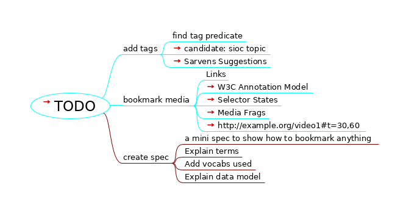

TODO

TODO
add tags
find tag predicate
candidate: sioc topic
Sarvens Suggestions
bookmark media
Links
W3C Annotation Model
Selector States
Media Frags
http://example.org/video1#t=30,60
create spec
a mini spec to show how to bookmark anything
Explain terms
Add vocabs used
Explain data model